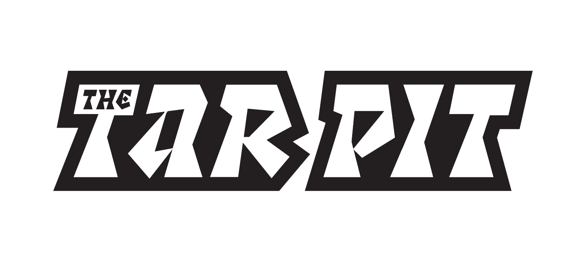
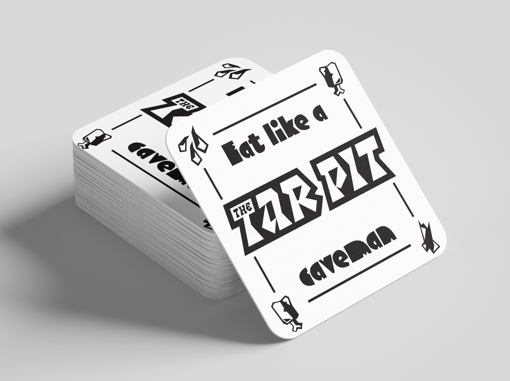
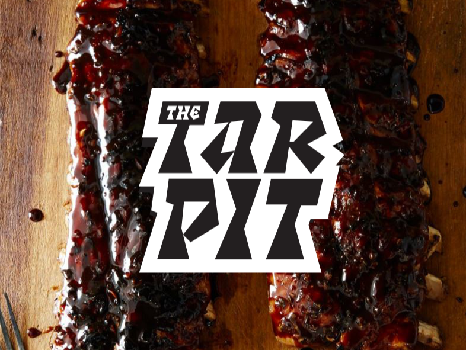

The Tar Pit
Food Truck

Programs Used
Adobe Illustrator
Adobe Photoshop
Category
Branding
Date Finished
Apr. 2024
The Tar Pit is a food truck concept rooted in the primal urge to eat. Serving food how it originally was intended: Off a bone! Reimagining the act of eating as an instinctual and sensory experience. Inspired by prehistoric survival and fire-cooked meals, the brand embraces rugged typography and earthy tones to evoke a world before convenience.
Luckily the food isn’t hunted or gathered, but served to you and ready to be devoured. We invite our customers to abandon modern expectations of the “clean” dining experience and instead indulge in something messy, hearty, and deeply satisfying.



